OPEN THE NEW MAP →the 27 Sep wheel (unchanged)
Monday 28 Sep 2026 · lane MARKET-MAP · branch candidate/map-r3-20260928 · a new page beside the live one: the 27 Sep wheel is not touched.
What this page shows
- The Geiger is a bar now, not a colour. Under every ball sits the Hub's Geiger bar: a dark track with a line at zero, filled from the middle to the reading, green to the right when up, red to the left when down. The full half of the bar is ±1, the same fixed scale as the Hub's composite bars (the board's cohort lines). The bar always faces you, whatever way the map is turned. The balls themselves are plain grey.
- Funds carry two bars. The top one (solid) is the fund's own Geiger. The one under it (striped) is its holdings blend: the Geigers of the fund's holdings that we serve, blended by their weight in the fund. Click a fund and the card shows both bars, the words "aggregate of 41 holdings = 93% of the fund's weight", a divergence line (for XLK today: "holdings weaker than the fund by 0.29"), and the top 10 holdings each with its own bar. A holding we do not serve says not served.
- Click the picked ball again to let go. Esc does the same, and so does the LET GO button on the card. Letting go clears the ring and the card and flies the camera back to where you were before you picked.
- A tree you read from the top down. THE MARKET at the top; US stocks, the world, bonds, commodities, crypto and the dollar below it; then the headings (broad market, style, US sectors, developed, emerging); then each sector's funds in a small block; then its names. The top of the tree is flat. It becomes 3D lower down: where a heading has more names than fit in one row, the extra rows step toward you. Technology (85 names) is a deep block of 10 rows; Real Estate (15) is 4 rows; a heading with three funds is one flat row. The 11 sectors sit in rows too: as many rows as make the whole tree the shape of the screen — 2 rows on a 1680 screen (Technology to Industrials, then Staples to Communication), 3 on a phone. The lower row hangs from a rail reached through a gap in the row above. Things sit closer together than on the wheel (one ball every 22 units, 26 between blocks).
- FLAT 2D lays the same rows downward and looks straight on, like an org chart. Labels are the same page text as before: headings always shown (neighbours drop to a second line rather than hide each other), fund and name labels appear as you zoom in, never overlapping, never cut off at the edge.
Before and after
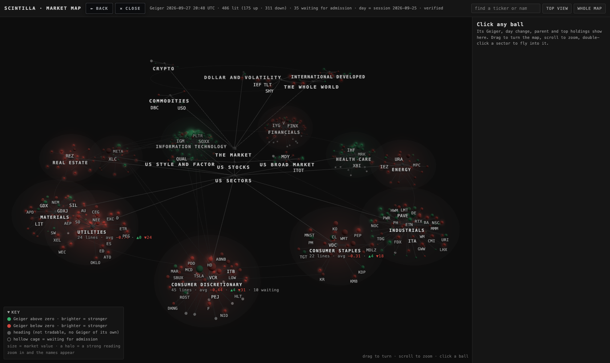
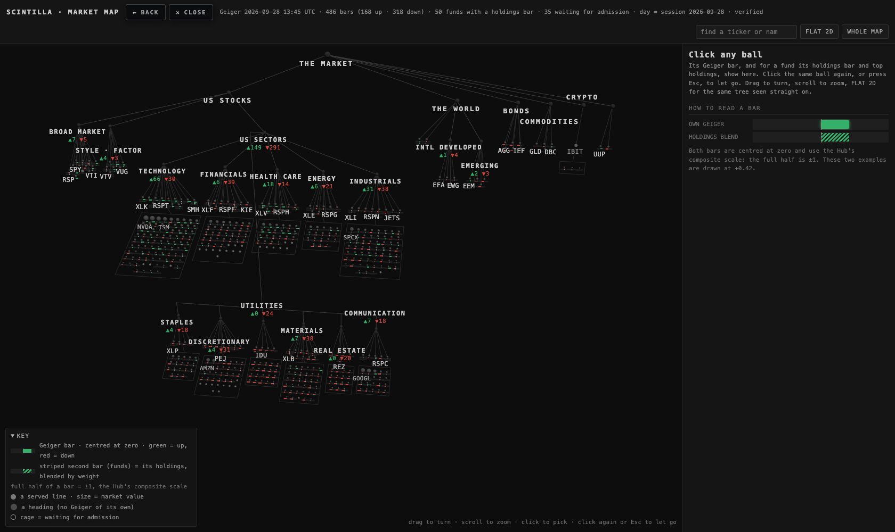
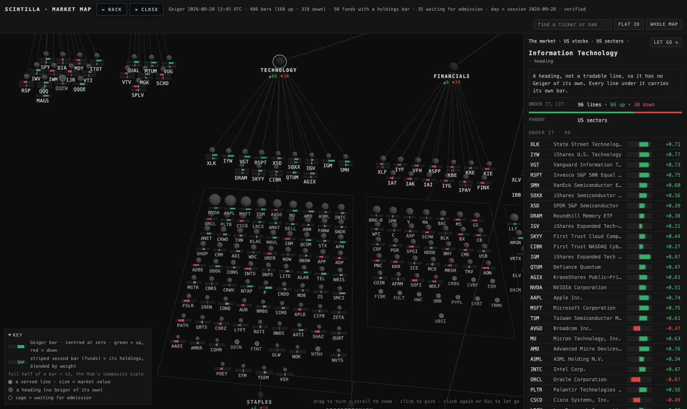
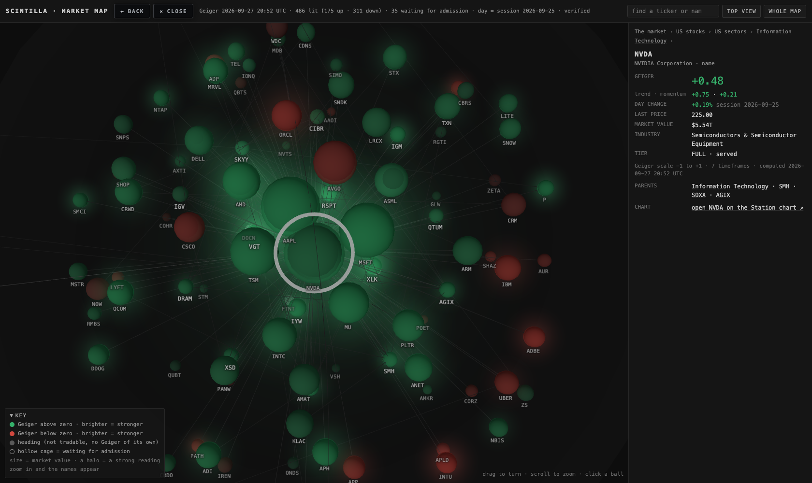
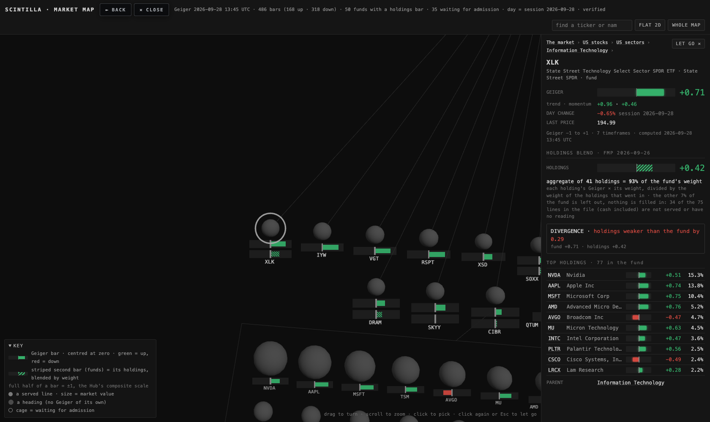
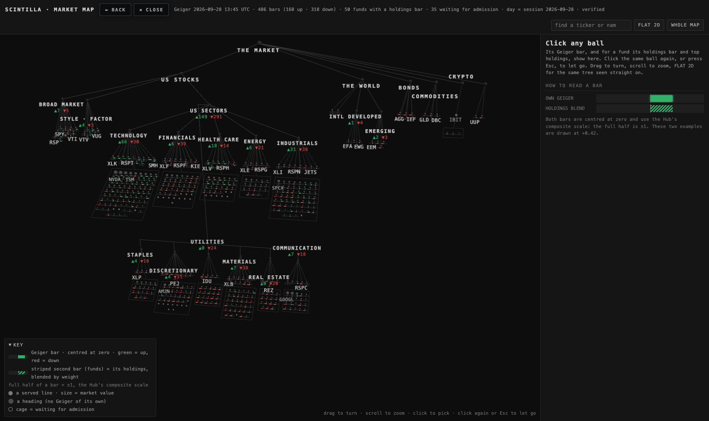
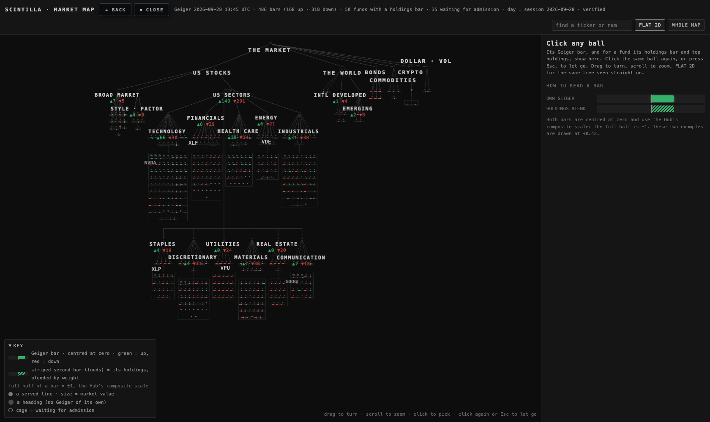
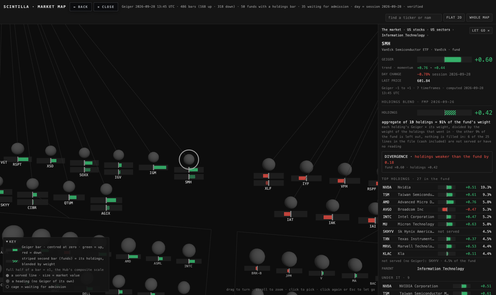
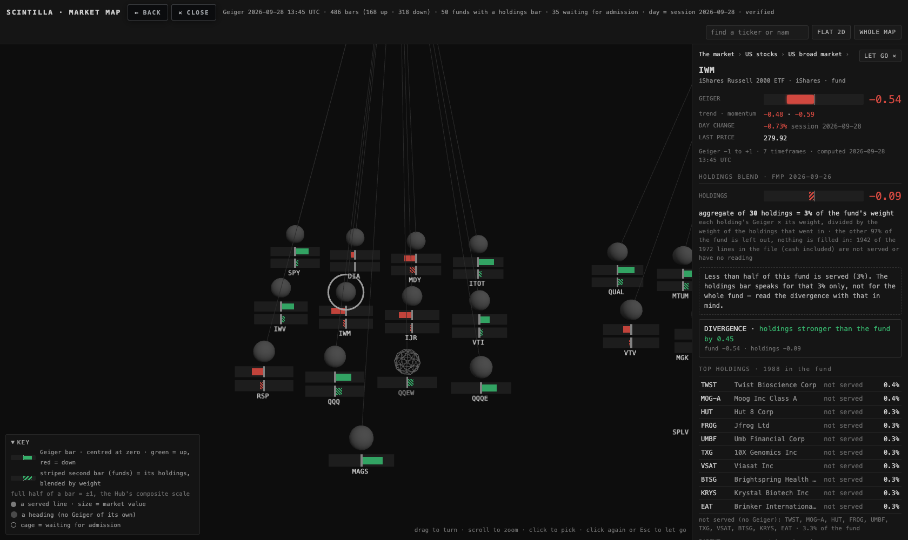
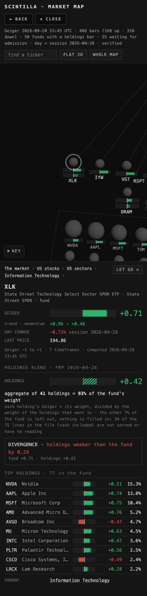
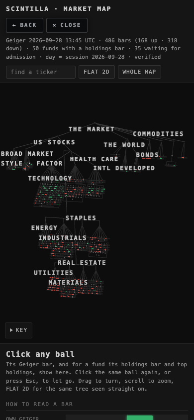
Fixed after review (28 Sep)
- Coverage was overstated when FMP's file lists only part of a fund. It was worked out against the file's own total. DRAM's file has 9 rows adding to 36% of the fund, so its 4 served holdings (13% of the fund) showed as "37% of the fund's weight". Now coverage is always a share of the whole fund, and the card adds a box when the file is short. DRAM 37% → 13%, VT 55% → 50%, AGIX 69% → 62%, GDX 51% → 50% (now under half). XLK, SMH, IWM and the other complete files are unchanged. A test now checks DRAM's real numbers.
- The opening view was a thin band (30% of the map's height at 1680, 16% on a phone), with heading labels colliding. The 11 sectors now wrap into rows that make the tree the shape of the screen. Measured headless, the whole tree now covers 70% of the map's height at 1680 (80% of the width), 66% on a 390 phone, with no ball under the KEY box; 60 labels show at the opening view instead of 32. Tilting the camera (the other suggestion) was not used: looking down more flattens the levels and makes the band thinner, not taller.
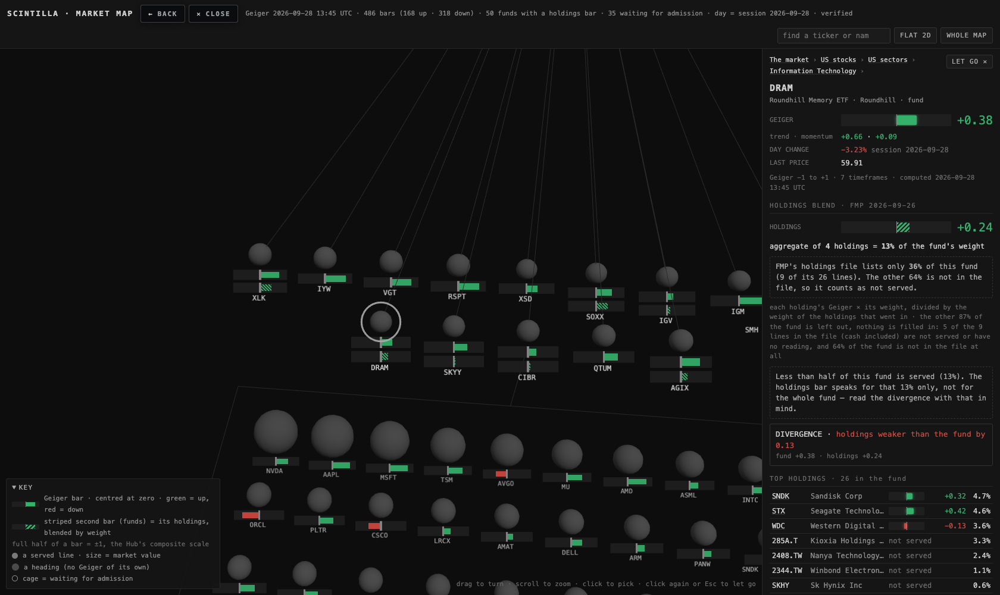
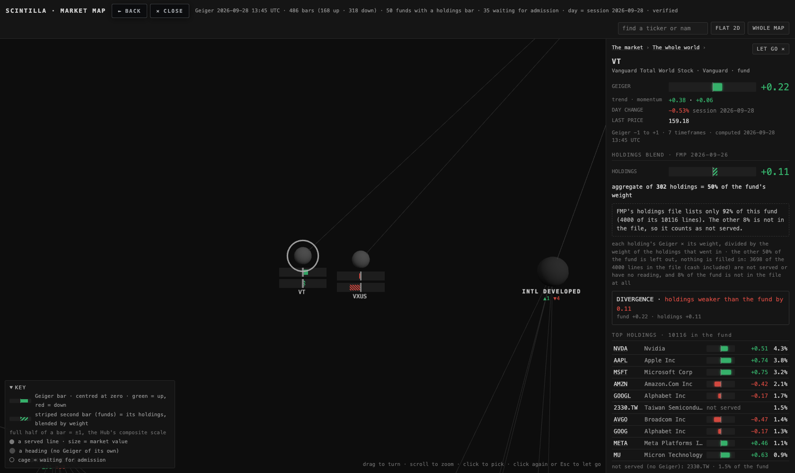
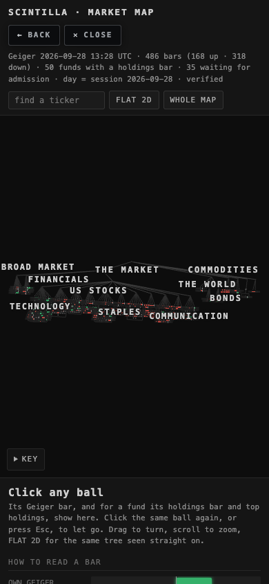

Where the numbers come from
- Geiger (every bar): the chart API
/geiger, live when the page opens (the header stamps the time and the chart API's own word, "verified"). Scale −1 to +1. Nothing is stored in the page. - Day change and last price on the card: the chart API
/quotes, live. - The tree: the 27 Sep node list, node for node (544 nodes; 486 served, 35 waiting for admission). A test checks that nothing in it moved.
- Holdings and their weights: FMP's holdings files of 26 Sep for 51 funds (the same file the 27 Sep map used). The build script (
scripts/build-market-map-r3.mjs) keeps, for each fund, every holding that is in today's served set, with its weight. - The holdings blend (
aggregate.js, the same code the tests run): each served holding's Geiger × its weight, added up, divided by the weight of the holdings that went in. Coverage = that weight as a share of the whole fund (100%), not of what FMP's file happens to list. Four files list only part of their fund — DRAM 36% (9 of 26 lines), VXUS 82% and VT 92% (both cut at 4,000 lines), AGIX 90% (56 of 71) — and their card says so in a box. Holdings we do not serve are left out; nothing is filled in. Counting every served holding as read: 22 funds are at least 80% covered (DIA 100%, QQQ 96%, XLK 93%, SMH 91%…); 17 are under half (RSP, MDY, IWM, IJR, VXUS, DRAM, SKYY, CIBR, KBE, IPAY, IBB, IHI, XPH, XOP, XRT, XHB, GDX), and their card says so. The live count can move by a fund or two when a holding has no Geiger reading at that moment. - Divergence = holdings blend − the fund's own Geiger, in two decimals: positive reads "holdings stronger than the fund by …", negative "holdings weaker …".
- CPU, measured headless on this MacBook, same method as the 27 Sep page (CPU-seconds per minute; 60 = one core fully busy):
Idle draws nothing (0 frames in the idle minute). Turning costs less than half of the wheel on a real GPU: all the bars are one draw call and there are no halos. Software graphics rows only show that painting on the CPU is expensive; no real screen does that. The old iMac was not measured (never touched).graphics idle · whole Chrome idle · the page turning · whole Chrome turning · the page r3 tree · Mac GPU (M5 Max, headless) 0.9 0.01 7.6 2.4 27 Sep wheel · Mac GPU 0.5 0.01 17.7 6.0 r3 tree · software graphics 2.5 0.01 674 0.7 27 Sep wheel · software graphics 0.4 0.01 700 0.8
What could be wrong
- Low coverage. A fund's holdings bar is only as good as its coverage. IWM, MDY and IJR are 1–3% covered, so their striped bar is a handful of names. The card warns under 50%; the bar on the map does not (see decision 2).
- Holdings are two days old (26 Sep). Funds rebalance; weights drift. VXUS and VT files stop at 4,000 lines, DRAM's file lists only 9 of its 26 lines and AGIX's 56 of 71; the missing part counts as not served, so those funds' coverage is, if anything, understated.
- Only the top 10 holdings are listed on the card; the blend uses every served holding, which can be many more (SPY: 251).
- Sector rows are chosen once, when the page opens, from the map's shape. Turning a phone or resizing the window afterwards keeps the rows it started with; WHOLE MAP still fits them. On the phone the whole view is readable but crowded (a few heading labels drop out); tap a sector to fly in.
- At the whole-map view the bars are small (they never shrink below 14 px wide, so the colours still read, but the lengths are hard to compare until you zoom in).
- The chart API only answers the Hub's own address, so the local headless screenshots ran in a throwaway headless Chrome with the cross-origin check switched off. The page itself is unchanged and will read the API normally once it is on scintillahub.ai.
- The candidate (not yet admitted) companies still sit under a sector chosen from their admission cohort — approximate, as on 27 Sep.
What I did not do
- The 27 Sep page was not updated in place. The picture changes completely (wheel → tree), so this ships as a new page at
/deliverables/20260928/market-map-r3/; nothing underdeliverables/20260927/market-map/changed. Swapping it in is decision 1. - No deploy, no database write, no admission, no change to the served set. Nothing was added to the Hub's other rooms.
- No headings bar: a heading (a sector, "US stocks") still has no Geiger of its own; its label shows ▲ up / ▼ down counts, not an average bar.
- The "scintillate" flash hook is carried over and still does nothing.
- Not tested on the old iMac or on a real phone — headless only.
- The Alan notes file for 28 Sep (
handoffs/ALAN-NOTES-20260928.md) did not exist when this ran; the work follows the coordinator's lane brief.
Files
index.html— the page ·nodes.json— the node list with served holdings weights ·aggregate.js— the blend and divergence ·layout.js— the tree layout ·proof.mjs— the headless walk and CPU script ·shots/scripts/build-market-map-r3.mjs— rebuildsnodes.json·tests/market-map-r3.test.mjs— 19 tests: node list unchanged, weights honest, blend maths on a fixture (including DRAM's short file), divergence words, tree deterministic / top-down / no overlaps with the sectors in 1, 2, 3 and 4 rows, the rows fit the screen's shape and clear each other, page wiring, house look, this write-up.